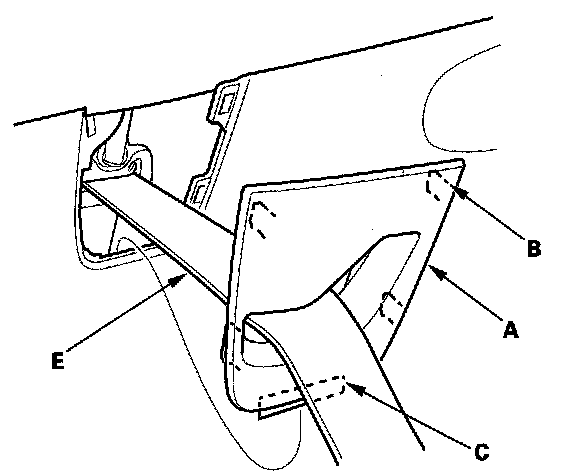
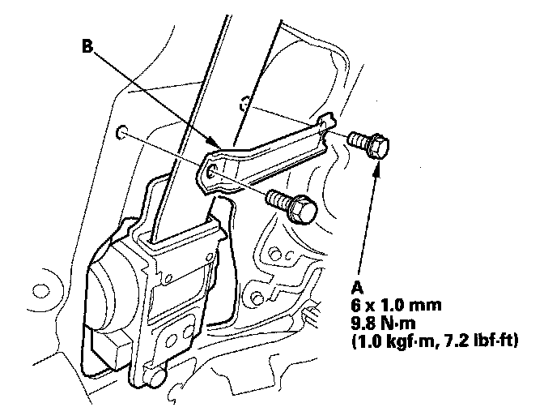
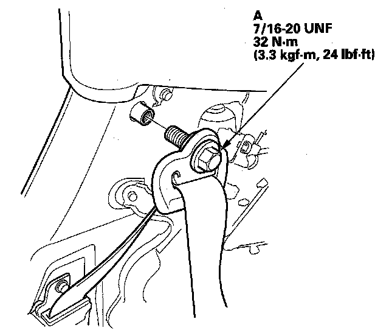
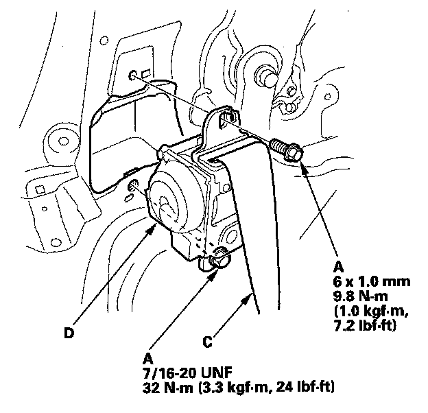
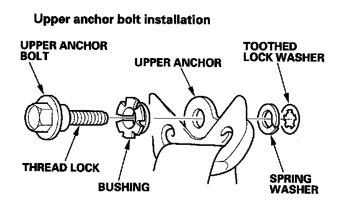
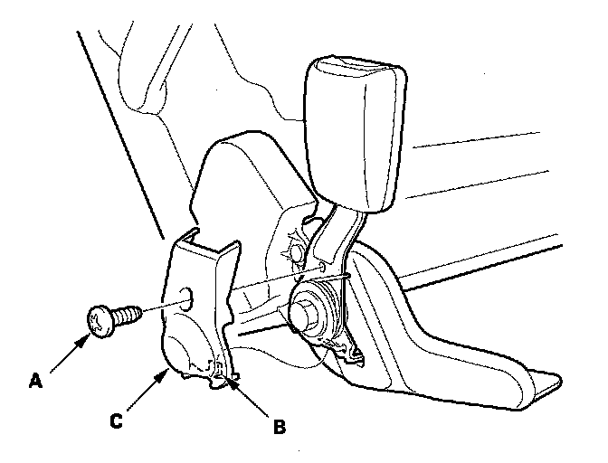
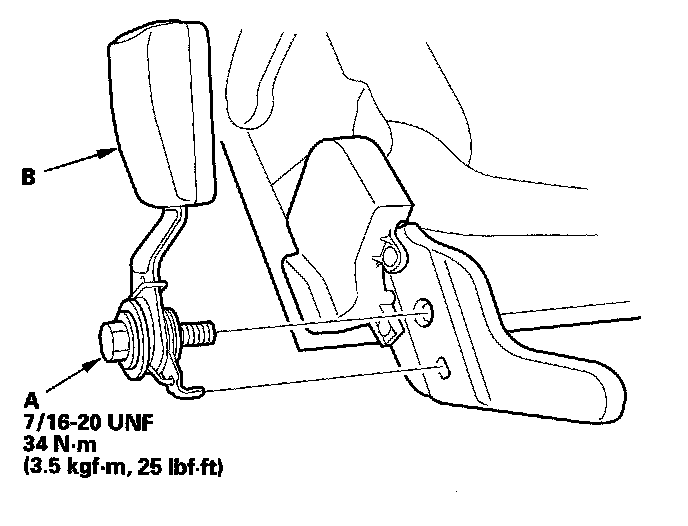
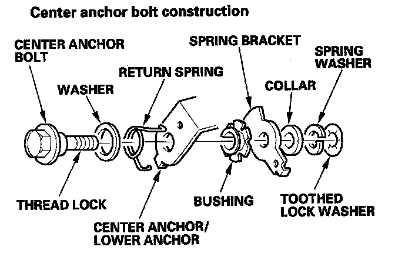

Third Row Seat Belt Replacement
Third Row Seat Belt ReplacementThird Row Seat Belt
NOTE: Check the third row seat belts for damage, and replace them if necessary.
1. Detach the third row seat belt lower anchor.
2. Remove the rear side trim panel.

3. Remove the seat belt exit D-pillar cap (A).
1. Pull out the top of the cap to release the hooks (B).
2. Release the lower hook (C) by pulling the cap upward.
3. Take the cap off the second row seat belt (E).
4. Remove the quarter pillar trim.

5. Remove the bolts (A) and the seat belt guide (B).

6. Remove the upper anchor bolt (A).

7. Remove the retractor mounting bolt (A) and the retractor bolt (B), then remove the third row seat belt (C) and retractor (D).

8. Install the seat belt in the reverse order of removal, and note these items:
- Apply medium strength type liquid thread lock to the anchor bolts before reinstallation.
- Tighten the bolts by hand first, then tighten to the specified torque.
- Check that the retractor locking mechanism functions as described.
- Assemble the washers and bushing on the upper anchor bolt as shown.
- Before installing the anchor bolt, make sure there are no twists or kinks in the seat belt.
Seat Belt Buckle/Seat Belt Detachable Anchor
NOTE: The seat belt buckle is shown, and the seat belt detachable anchor is similar.
1. Remove the third row seat.

2. Remove the screw (A), and release the hook (B), then remove the bracket cover (C).

3. Remove the center anchor bolt (A), then remove the seat belt buckle (B).

4. Install the buckle in the reverse order of removal, and note these items:
- Assemble the washers, spring, bushing, bracket, and collar on the center anchor bolt as shown.
- Apply medium strength type liquid thread lock to the center anchor bolt before reinstallation.